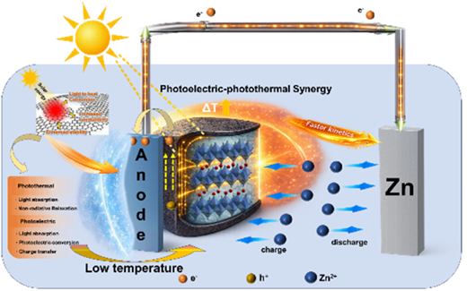
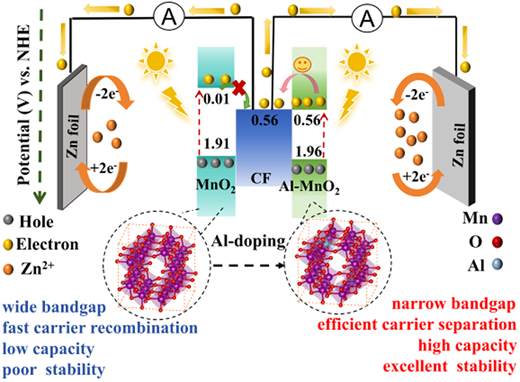
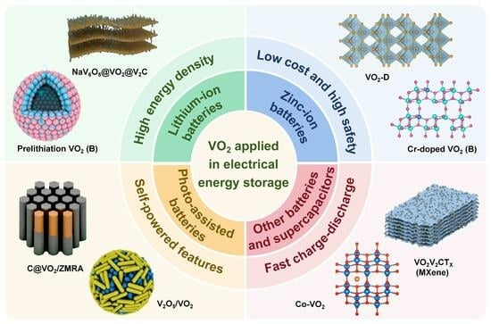

GROUP PUBLICATIONS / 课题组成果从组内工作，
连接光与储能。
集中整理已确认的课题组论文，按光辅助研究、综述和关联器件展开。结合 TOC 图文摘要浏览材料与器件设计，再进入中文导读与原文。
已整理 9 篇 · 持续查漏补缺
点击 TOC 查看大图；图片下方可追溯期刊来源。已收录 3 / 9 篇 TOC
01光辅助研究
围绕载流子与储锌反应设计材料
从 MnO₂ 异质结与掺杂，到水合钒氧化物中的预嵌入和光热协同，沿材料与反应问题阅读。
Nano Materials Science · 2026 · 研究论文 · L34Constructing nanolaminate structures with covalent bridges for high-performance photo-assisted Zn-ion storage
通过原位聚合形成 MnO₂/PPy 纳米层，结合层间扩展、共价桥连和能带调控研究光辅助储锌。
查看中文导读、DOI 与原文 → TOC原图待补充
在期刊页查看 ↗
Advanced Sustainable Systems · 2026 · 研究论文 · L120ZnO@MnO2 Heterojunction Photocathode for High‐Capacity Photo‐Assisted Zinc‐Ion Battery
构建 ZnO@MnO₂ 异质结以改善载流子分离、导电性和反应动力学。公开摘要报告光照下在 0.2 A g⁻¹ 时约 545 mAh g⁻¹，比暗态提高 92.58%；非原位表征将储能反应与 MnO₂ / ZnMn₂O₄ 的可逆转化联系起来。
查看中文导读、DOI 与原文 → TOC原图待补充
在期刊页查看 ↗

TOC · 放大 ↗RSC · Visual Abstract ↗© 2026 The Author(s), Royal Society of ChemistryJournal of Materials Chemistry A · 2026 · 研究论文 · L07Photoelectric-photothermal synergistic enhanced photo-assisted zinc-ion batteries based on carbon-coated hydrated vanadium oxide
讨论碳包覆水合钒氧化物中的光电荷转移与光致升温协同效应，关注低温条件下的光辅助储锌。
查看中文导读、DOI 与原文 →
Journal of Energy Storage · 2025 · 研究论文 · L20Boosted energy capacity and cycling stability of photo-assisted zinc-ion batteries by K+ intercalated hydrated vanadium oxide-based photocathodes
通过 K⁺ 预嵌入调节水合钒氧化物的层状框架、电导和能带，研究光辅助储锌的容量与循环表现。
该论文另有出版社更正，阅读导读时可查看更正入口。
查看中文导读、DOI 与原文 → TOC原图待补充
在期刊页查看 ↗

TOC · 放大 ↗RSC · Visual Abstract ↗© 2025 The Author(s), Royal Society of ChemistryJournal of Materials Chemistry A · 2025 · 研究论文 · L19An optimized MnO2 photocathode by doping engineering for high capacity and stability photo-assisted zinc-ion batteries
以 Al 掺杂调节 MnO₂ 光正极的能带、载流子传输与层间结构，提供兼顾光响应和循环稳定性的锰基案例。
查看中文导读、DOI 与原文 →
Small · 2024 · 研究论文 · L118An Efficient MnO2 Photocathode with an Excellent SnO2 Electron Transport Layer for Photo‐Accelerated Zinc Ion Batteries
将 SnO₂ 电子传输组分与 MnO₂ 的储能和光吸收能力结合，构建双功能异质结光正极。公开摘要报告光照下在 0.1 A g⁻¹ 时约 598 mAh g⁻¹，并结合实验与理论计算，将性能改善联系到载流子分离、导电性和界面电荷转移。
查看中文导读、DOI 与原文 → TOC原图待补充
在期刊页查看 ↗
02综述与框架
把具体研究放回材料和器件框架
综述同时涉及多个储能体系；VO₂ 综述中的光辅助部分与常规电化学背景分别辨认。

TOC · 放大 ↗MDPI · Graphical Abstract ↗© 2025 He et al. · CC BY 4.0 · 授权说明Nanomaterials · 2025 · 综述 · L117Recent Advances in the Application of VO2 for Electrochemical Energy Storage
综述 VO₂ 的晶体结构、合成路线和电化学储能应用，覆盖锂离子电池、锌离子电池、光辅助电池及超级电容器。可用于梳理晶相、掺杂和复合结构如何影响电荷转移与结构稳定性，并为光响应电极设计提供背景。
查看中文导读、DOI 与原文 →
Journal of Power Sources · 2024 · 综述 · L43Advanced photo-rechargeable lithium- and zinc-ion batteries: Progress and prospect
对比双电极光充电锂离子与锌离子电池的工作机制、材料进展和设计策略，为理解共通的光电极问题提供入口。
查看中文导读、DOI 与原文 → TOC原图待补充
在期刊页查看 ↗